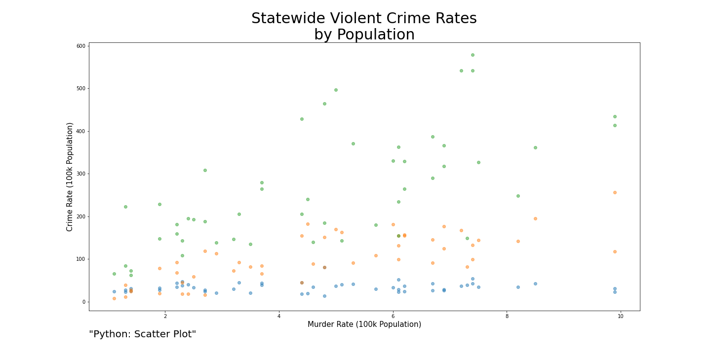
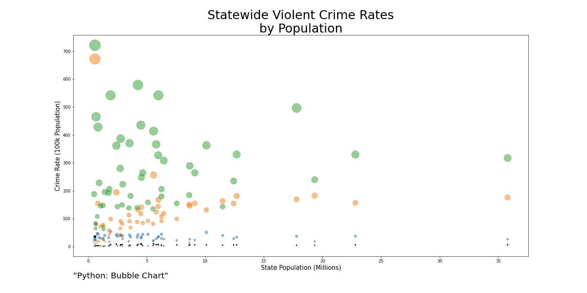
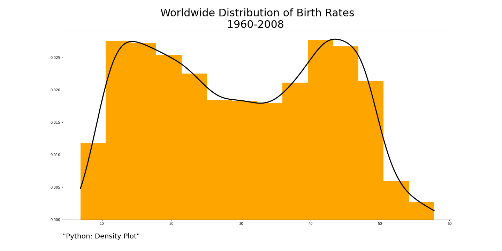
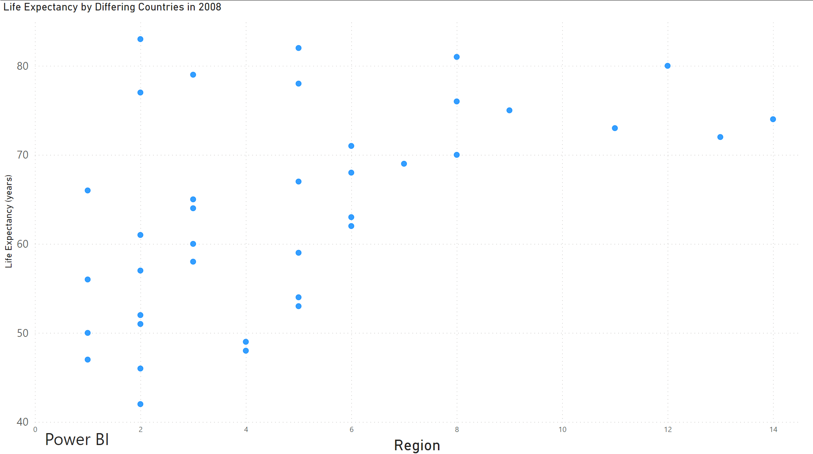
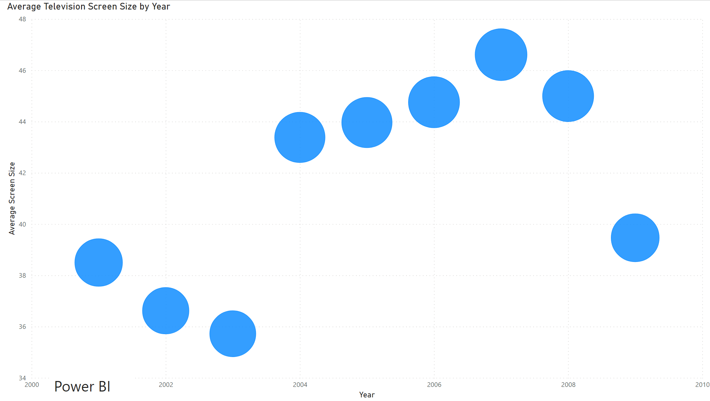
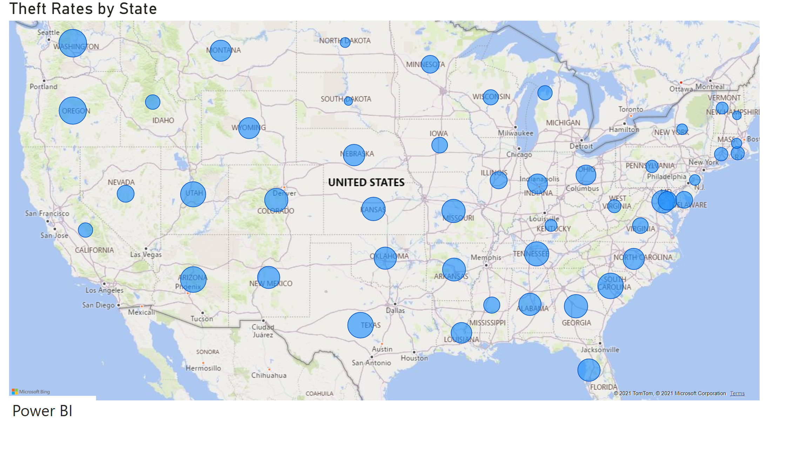
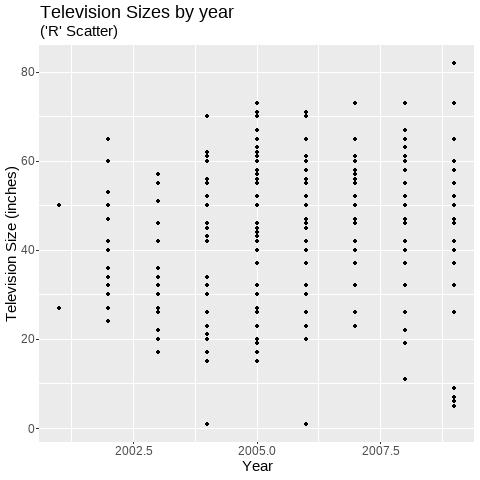
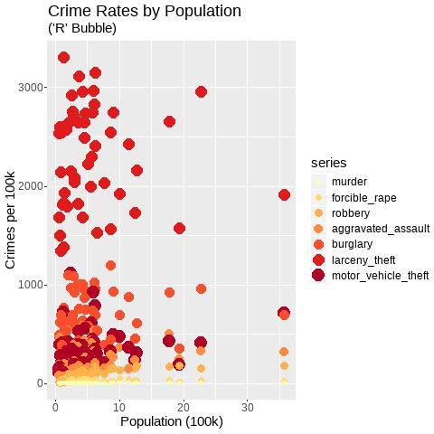
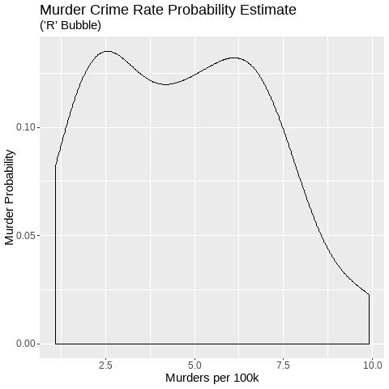

DSC640-T301: Data Presentation and Visualization
Bellevue University
Professor Catherine Williams
Week 07/08
Exercise 4.2: Scatterplots, Bubble Charts, & Density Plots/Maps
Author: Kurt Stoneburner
These two weeks we are going to be focused on tree maps, area charts, and stacked area charts and using various tools to create these visualizations. You must consolidate all the charts into ONE document with each chart labeled with the type of chart and technology - for example: Python - Bar Chart. Failure to label and consolidate the charts will resort in points being taken off or a 0 for the assignment.
Sources:
Github Notebook: Python Code
Github Notebook: R Code
PowerBI PBIX file








